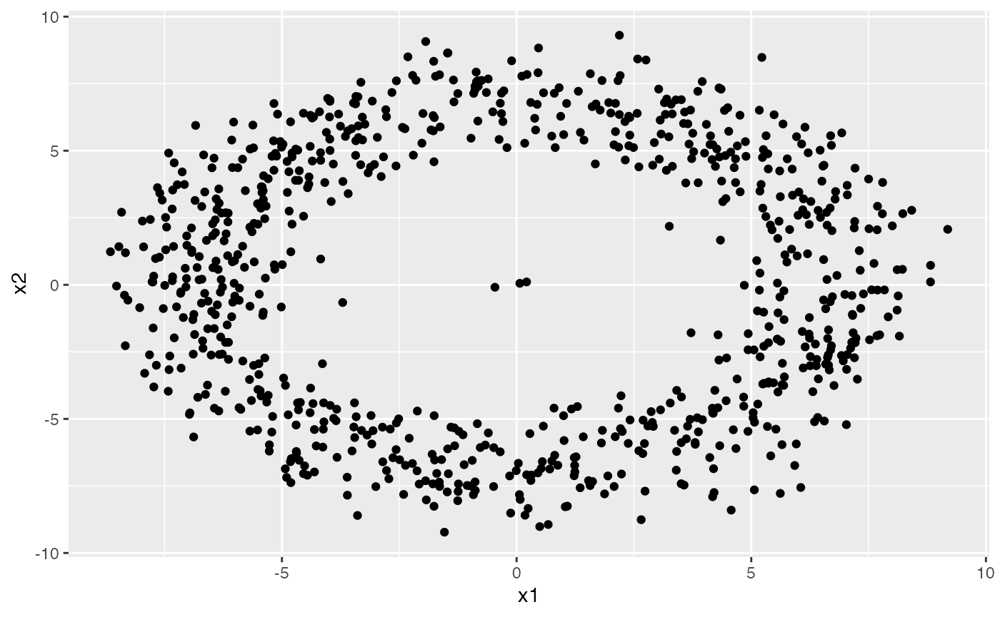
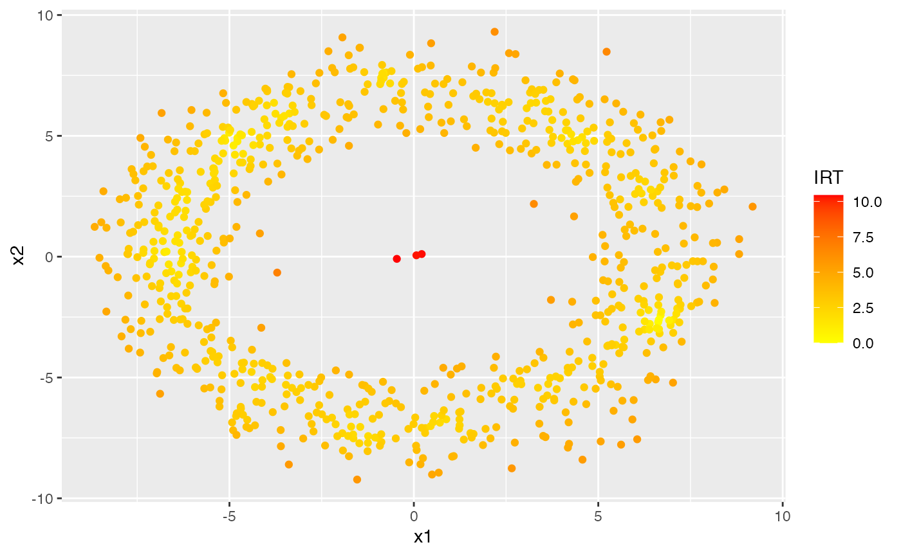
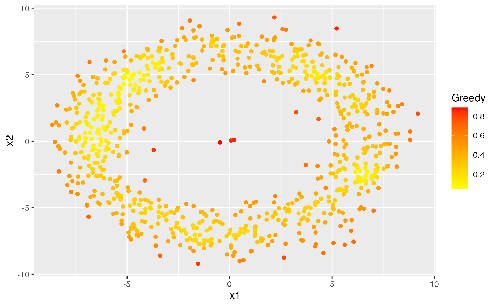
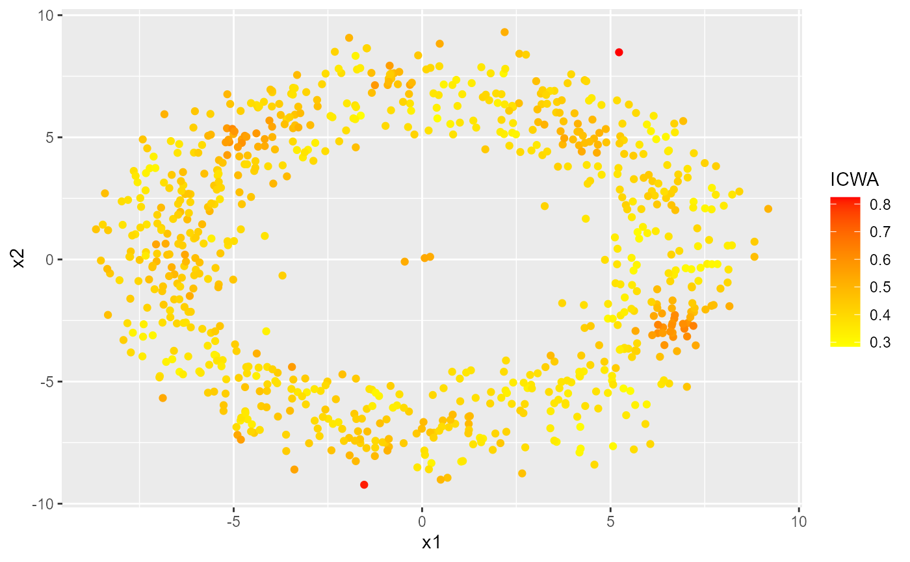
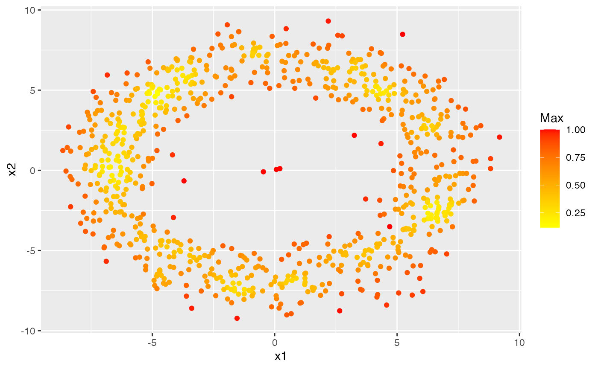
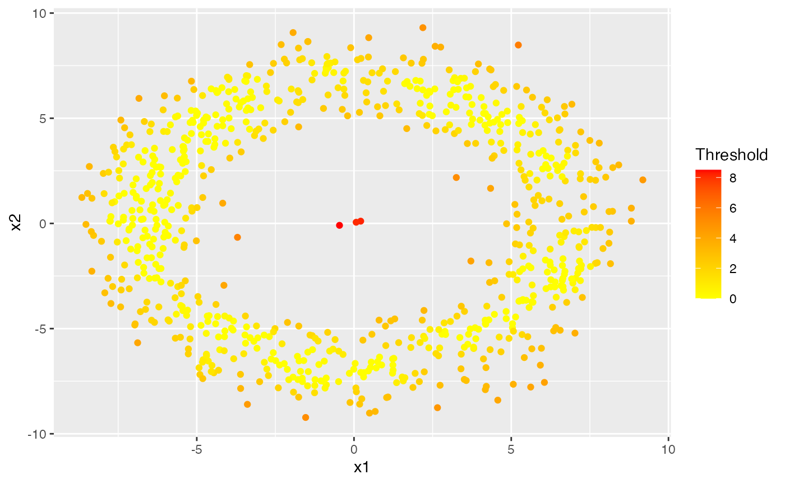

outlierensembles
outlierensembles.RmdLet us add some anomalies inside an ring.
set.seed(1)
r1 <-runif(803)
r2 <-rnorm(803, mean=5)
theta = 2*pi*r1;
R1 <- 2
R2 <- 2
dist = r2+R2;
x = dist * cos(theta)
y = dist * sin(theta)
X <- data.frame(
x1 = x,
x2 = y
)
labs <- c(rep(0,800), rep(1,3))
nn <- dim(X)[1]
knn_auc <- lof_auc <- cof_auc <- rep(0, 10)
mu <- 0
z <- cbind(rnorm(3,mu, sd=0.2), rnorm(3,0, sd=0.2))
X[801:803, 1:2] <- z
ggplot(X, aes(x1, x2)) + geom_point()
Let us find outliers using DDoutlier R package and use the IRT ensemble to construct an ensemble score.
y1 <- DDoutlier::KNN_AGG(X, k_min=10, k_max=20)
y2 <- DDoutlier::LOF(X, k=10)
y3 <- DDoutlier::COF(X, k=10)
y4 <- DDoutlier::INFLO(X, k=10)
y5 <- DDoutlier::KDEOS(X, k_min=10, k_max=20)
y6 <- DDoutlier::LDF(X, k=10)
y7 <- DDoutlier::LDOF(X, k=10)
Y <- cbind.data.frame(y1, y2, y3, y4, y5, y6, y7)
ens1 <- irt_ensemble(Y)
df <- cbind.data.frame(X, ens1$scores)
colnames(df)[3] <- "IRT"
ggplot(df, aes(x1, x2)) + geom_point(aes(color=IRT)) + scale_color_gradient(low="yellow", high="red") 
Then we do the greedy ensemble.
ens2 <- greedy_ensemble(Y)
df <- cbind.data.frame(X, ens2$scores)
colnames(df)[3] <- "Greedy"
ggplot(df, aes(x1, x2)) + geom_point(aes(color=Greedy)) + scale_color_gradient(low="yellow", high="red") 
We do the ICWA ensemble next.
ens3 <- icwa_ensemble(Y)
df <- cbind.data.frame(X, ens3)
colnames(df)[3] <- "ICWA"
ggplot(df, aes(x1, x2)) + geom_point(aes(color=ICWA)) + scale_color_gradient(low="yellow", high="red") 
Next, we use the maximum scores to build the ensemble.
ens4 <- max_ensemble(Y)
df <- cbind.data.frame(X, ens4)
colnames(df)[3] <- "Max"
ggplot(df, aes(x1, x2)) + geom_point(aes(color=Max)) + scale_color_gradient(low="yellow", high="red") 
Then, we use the a threshold sum to construct the ensemble.
ens5 <- threshold_ensemble(Y)
df <- cbind.data.frame(X, ens5)
colnames(df)[3] <- "Threshold"
ggplot(df, aes(x1, x2)) + geom_point(aes(color=Threshold)) + scale_color_gradient(low="yellow", high="red") 
Finally, we use the mean values as the ensemble score.
ens6 <- average_ensemble(Y)
df <- cbind.data.frame(X, ens6)
colnames(df)[3] <- "Average"
ggplot(df, aes(x1, x2)) + geom_point(aes(color=Average)) + scale_color_gradient(low="yellow", high="red")